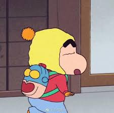

우스이 요시토의 만화 크레용 신짱을 원작으로 한 애니메이션이자 한국과 일본에서 모두 사랑받는 레전드 애니메이션.
애니메이션과 원작의 색채는 상당히 다르다. 애니메이션 방영 초창기에 저질이라고 온갖 욕을 들었지만 일찍부터 애니메이션 제작진과 원작자의 노선에 차별성이 큰 편이다. 극초창기 에피소드를 보아도 (어디까지나 원작에 비해서는) 블랙코미디 색채는 상당히 옅은 편이다. 작품의 부정적인 여론도 있었지만 재평가와 긍정적인 여론이 많이 생기며 현재는 일본의 장수 애니 중 하나인 국민 애니메이션 중 하나로 자리매김하게 되었다.